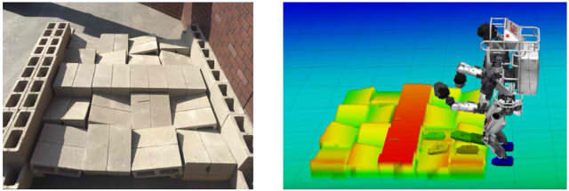

On the third floor of the Fukushima Daiichi Nuclear Power Plant Unit 2 sits a tracked-wheel robot named Quince, permanently disconnected from the world due to an accidental severing of its communication cable upon returning home from its final mission. Even if any battery remains, its electronics have long since exceeded radiation exposure limits and are unlikely to work, atleast not as intended. Over six missions, a team of remote operators controlled Quince and used the robot's unique capabilities to climb stairs and open doors, to map the internal structure, to measure water spill and radiation levels, and to gain an overall status of the situation after the 2011 disaster. The missions allowed the people involved to understand the aftermath without sending in and risking human lives inside the debris-filled and highly radioactive reactor building. It demonstrated the societal benefits of robotics and that technology is more or less ready for practical deployment. However, that technology did not develop over night; being able to build and control a complex machine like Quince builds on over a century of breakthroughs in science and engineering. In this article I want to take you on a journey through one small part of that history: the history of visual feedback and user interfaces for robots.
So how did we get here? Well, we might say that it all began some two and a half million years ago when humans learned to create tools from nature. For example, the stick can be said to be the first example of a teleoperated system, as it allowed us to manipulate objects from afar, if only a couple of centimeters, and avoid injury when the object is surrounded by fire or a hot soup. But although there are many interesting observations to be made regarding our ability to sense and manipulate objects using sticks and stones, we won't begin our journey there. Instead, our journey begins in the late 1800s, after another of nature's forces, electricity, had been tamed. In 1898, Nikola Tesla got a patent for what can be called the first wireless remote-controlled ship. In his design, an operator standing on the shore could control the rudder by pulling a lever left or right. This in turn triggered the transmission of an electric signal that would be received by an antenna on-board the ship and steer a motor connected to the rudder.
Tesla, 1898.
The problem with this is that the operator has no way of knowing where the ship actually is or what it's doing, as the fog during day, and the darkness during night, serves to shroud the vessel. Tesla was no stranger to this problem, and proposed to connect bright lights to the top of the ship, controlled by the rudder's position. He also suggested that the two tall poles at the fore and aft of the boat "should be painted in lively colors, so as to be visible by day at great distances." One can imagine that at nightfall what the operator would see through the telescope might have resembled a sort of stickfigure drawing, with two brightly colored lines indicating the fore and aft of the boat, and two blinking dots indicating which way it's turning; a view that would be strikingly similar to the early computerized displays near the end of the century.
Tesla, 1898.
Tesla was fairly excited about the potential uses of his invention, including the transporation of goods, fishing or establishing communication with inaccessible areas. But its "greatest value", he wrote, "will result from its effect in warfare and armaments, for by reason of its certain and unlimited destructiveness it will tend to bring about and maintain permanent peace among nations."
As with many of his ideas, Tesla's tele-operated boat was ahead of its time. It had all the components of a modern teleoperated robot; a mechanism for capturing the intent of the operator, in this case the levers to control the rudder, and a method for providing feedback about the results of the operator's actions, in this case the blinking lights. But contrary to Tesla's beliefs, the boat would not be used for the subsequent wars of the century, as, even with its "unlimited destructiveness", it had a number of flaws which made it useless for warfare: one being that the very same mechanism by which the operator sees his boat is also what gives its position away to the enemy. It is also unlikely that the enemy will paint their non-teleoperated boats in similarly lively colors, as that would give away their own position. Thus, not only is the boat a sailing target for the enemy, but the operator has no idea what's around it and is incapable making a meaningful attack. Tesla's boat would thereby be largely ignored.
Although Tesla's boat did not have the effect he anticipated, this did not prevent mankind from obtaining a weapon of unlimited destructiveness, though the scale of which could not be imagined even by Tesla. In the middle of the century, it had taken the world's scientists six years to go from discovering the process of nuclear fission and hypothesizing the possibility of a sustained chain reaction, to obtaining a full understanding of its behaviour and translating this understanding into a functional weapon. While it was the bombing of 1945 that made it clear that mankind had crossed a threshold in our relationship with nature, the years leading up to it came with its share of warnings, as there were several incidents caused by lack of training on the proper handling of nuclear materials, which were in some cases fatal.
For this reason, in 1945 at the Argonne National Laboratory near Chicago, the american scientist Raymond Goertz decided to make the process safer by developing a machine which became the world's first master-slave teleoperator. This machine allowed a person to handle radioactive material from an office seperated by a one meter thick concrete wall, with a small radiation-proved window looking in. The arm at the other end, the slave, is mechanically or electrically coupled to an identical master arm handled by the operator. The coupling between the arms is two-way such that forces exerted on the slave arm can be felt at the master arm, enabling the operator to feel the forces that are acting upon it and know when they've gripped something.
Niemeyer, 2008.
In the coming years a number of improvements were made: electrical servoes replaced the direct mechanical connection, thus providing the operator some much-wanted rest from the physical exertion of moving the arms. Closed-circuit television and TV cameras also allowed the operator to be an arbitrary distance away, and to see the other side from different viewpoints through monitors.
After the war, as nuclear research fell into the background, mankind looked to new uses of robotics in unexplored frontiers, among them the moon and the ocean. By the 1960's, the US, USSR and French navies had taken an interest in telemanipulators and video cameras, and began experimentally to attach them to underwater vehicles. For example, in 1966, the US Navy used a cable-controlled submersible to retrieve a nuclear bomb from the ocean bottom, which had been accidentally dropped from an airplane. Mineral extraction and cable laying firms became interested to replace human divers, especially as oil and gas drilling operations got deeper. And, of course, there was the race to the moon.
"Handyman, the first (1958) electrohydraulic master-slave teleoperator" and "An early wheelchair arm-aid operated by the handicapped person's tongue." Sheridan, 1987.
It was at this point that the dynamics between operator and machine were beginning to be formalized and understood more properly. One person at the frontier of this research was Thomas B. Sheridan, who was a professor of applied psychology and mechanical engineering at MIT at the time, and remains a professor there at the time of writing. Sheridan will play an important role in our story going forward, as he has made a number of significant contributions to the field, and, as an eager thesis advisor, trained the up-coming generation of roboticists, and as many as six astronauts (!).
Sheridan and his lab at MIT discovered that, as television became a common component and the distance between the operator increased, a number of problems emerged. One problem was that the operator could no longer directly see the object he/she was manipulating, and instead had to rely on what could be gleamed of from a small, two-dimensional CRT monitor, which was of rather poor resolution compared with today's monitors. This led to what was later called the "keyhole" effect, where only a limited portion of the environment is presented to the operator, who has to make an effort to survey it in order to get a situational awareness comparable to being there in person. The loss of a mechanical connection also meant that the operator no longer had a sense of proprioception or of the forces exerted upon the robot. For example, in a search and rescue operation at the site of the WTC in 2001, a robot got stuck on a metal rod, and the operator was unable to diagnose the problem based only on a video feed with a limited view.
Another problem that was particularly troubling was that of time delay. As the distance increased, the operators began to notice a kind of instability, much like what you might notice when turning your shower's water temperature knob: since there's a delay of a couple of seconds before the water reaches the set temperature, you have to learn to stop turning the knob before it reaches the temperature you want, otherwise you'll go too far and have to turn it down. If you happen to overcompensate on the way down, the water becomes even colder than you started with, and so you continue cycling between too cold and too warm.
Time delay became a major concern during the space race, as engineers were thinking about how to control robots on the moon from earth, where the radio signal round trip itself takes a good part of a second. The problem gets worse when considering that information coming back from the robot, the pictures from the camera, had to be transmitted serially. A typical bandwidth at the time meant that one could expect up to one very low resolution picture every 8 seconds. Similar problems were also faced in underwater remote control where sound has a round trip time of about one second every kilometer.
A solution to this problem, that you quickly learn in the shower example, is to adopt what is known as a "move-and-wait" strategy, where you turn the knob by a small amount and wait until it reaches that temperature before making your next move. In 1963, Sheridan and his colleague William Ferrell discovered that teleoperators adopted the same strategy for robotic manipulators; making a small move without looking at the display, then stopping while waiting for the display to catch up and confirming that the action had been followed. This meant that the operator could only commit to a small incremental position change in what's known as "open loop", that is, without feedback. The success of this relies on the accuracy of the operator's mental model of how the robot will behave and how the environment will react from their action. For complicated situations, this process was terribly inefficient and straining for the operators.
Sheridan and his colleagues didn't make much progress on the time delay problem during the 1960's, as he said in a recent interview: "I think, our research kind of scared NASA off, instilling a feeling it was impossible to control anything from the ground, unless it was very very slow. That gave some thrust to the need for sending astronauts. There were lots of reasons, of course; people naturally wanted to be there to explore." Then again, there were those who tried; alas, the results of these efforts are best summarized by Simon Kassel's report on the Lunokhod-1 rover's operations on the moon in the Sea of Rains in 1970: "Its progress has been slow but steady."
Fortunately, the turn of the decade brought about some much-needed technology, as Sheridan recalls in 1978: "At the authors' own institution just 25 years ago, the Whirlwind 1 computer filled a 2 1/2 story brick building. Today the equivalent computational capacity is available in a single microelectronic chip." The progress in "microelectronics" had two major implications: one was that the computer was no longer the bottleneck in cost, power and size, compared with what was demanded by propulsion or communication devices, and it therefore became much more practical to use computers on the other side. It was during this time that the term "telerobot" came into use, as the teleoperators went from being an extension of one's arms, like the types of machines developed by Goertz in the 40's, to taking different forms and becoming more of a collaborator at the other side, that could interpret what you wanted to do and decide how to go about doing it. What distinguished a telerobot from a classical teleoperator, was that the robot had a computer capable of receiving, storing and executing commands using sensors and actuators.
This technological breakthrough allowed Ferrell and Sheridan to develop a strategy called supervisory control, where the operator communicates a high-level goal and some instructions for getting there, which are then sent to the telerobot, to be interpreted and executed. What's important is that the person doesn't need to check up on the progress all the time; instead of moving the arms an inch at a time, they would simply tell the arms to go to a specific place and the computer on the other side would find a safe path and automatically follow it. This provided a fundamental way to get around the time delay problem, as it was now possible to adjust how often the operator actually had to receive feedback to make decisions. As the computer on the other side grows more capable, or "autonomous", the need for human intervention, and thus the need for feedback, decreases.
"Direct and supervisory control of a teleoperator." Sheridan, 1978.
The other major impact of the increasing computer power was the development in real-time computer graphics. This led to another solution to the time delay problem called predictive displays. The idea was that when the operator performs an action, the signal is sent not only to the real robot on the other side, but also to a simulated model of the robot inside a computer. Because the model robot could be simulated without delay, and the computer is right next to the operator, the results of the operator's actions could be drawn in a virtual display instantaneously, before the video from the actual robot returned. Essentially, this offloads the operator's need to use their mental model of how the robot behaves to implementing that model in a computer and simulating it.
"Predictor display." Sheridan, 1978.
An early prototype for a predictor display was developed by Sheridan and William Verplank in 1978 for a lunar rover. Their experiment consisted of a computer generated terrain, displayed from above in perspective, and updated every 8 seconds to simulate a delayed video feed. A small square on the screen, that they called a predictor symbol, would simulate the rover driving on the terrain, and was updated at a much higher rate. The task was to follow a ridge by essentially keeping two lines centered on the screen. Now, doing this only with the picture that updates every 8 seconds was fairly difficult, and it took the participants about six minutes to complete the task, at extremely slow speed to avoid going unstable. When they added the predicted rover position, which was updated continuously, the operator could tell where the camera was pointing and what the next picture would be, and was able to complete the task in almost half the original time.
"Simulation experiments with predictor display." Sheridan, 1978.
Four years later, in 1982, Sheridan became the thesis supervisor of Mark Vincent Noyes. Noyes took the idea of predictive displays and applied it to a robotic gripper arm based on the model developed by Goertz. Using a 32 kilobyte computer, with an unspoken CPU speed, he was able to superimpose a wireframe drawing of a simulated version of the arm on top of the incoming video feed, which was delayed by a few seconds. The camera and the model were calibrated such that the wireframe appeared at the location the real arm would be once the video caught up. This way, if you waited at least one round-trip delay without making any new moves, the simulated wireframe and the video of the arm could be seen to coincide.
"Noyes' predictor technique for a telemanipulator: Photograph of stick-figure arm superposed on video screen." Sheridan, 1993.
A modified version of Noyes and Sheridan's predictive display was used by the German space agency DLR in 1993, in a successful demonstration of the first space telerobot on board the NASA space shuttle; an impressive milestone in the history of telerobotics. The round trip delay was around 6-7 seconds, which made predictive displays absolutely crucial, and, thanks to a decade of Moore's law, the computers were now powerful enough to render both the robot arm and surrounding objects in 3D, with somewhat realistic lighting. The graphics were rendered on stereo TV monitors, and the operators had stereo glasses that could provide proper depth perception.
"DLR's universal telerobotic station MARCO (Modular A&R Controller)." Hirzinger, 2003.
Aside from 3D graphics, the DLR robot distinguished itself from Noyes' predictive display also in that the graphical simulation was not overlaid on a video stream, but was instead presented on its own monitor. In fact, the operators did not use video streams and relied instead on simulation and sensor data that made it back from the actual robot, all integrated in an entirely virtual scene, a technique which was called virtual reality.

Niemeyer, 2008.
Today, looking back, virtual reality is considered to have gone through what we may call a not-so glamorous period in the late part of the century, and has only rightfully been implemented in recent years, when processors, optics and display technology have gotten "ready". But I think this paints an unfair picture of what was not only a practical but also very useful technique for providing robot operators with clear and undelayed visual information. Despite being relatively crude in its visual fidelity, the technique was still largely appreciated, for example in controlling the above space robot.
Almost every historical treatment of virtual reality, as we know it today, start with Ivan Sutherland and his 1968 computer-driven head-mounted-display. Now, head-mounted-displays were not new in 1968. Several attempts can be traced back to early investigations in enhancing the visual interfaces of aircraft systems in 1960. But Sutherland's display did not present video from cameras; its major innovation was the ability to present an image of a computer-generated 3D object, that changed in exactly the way that the image of a real object on your retina would change, if you were to move around it. Producing the right image involves a number of calculations, such as rotation and perspective projection, for which no general-purpose computer at the time were capable of performing in anything resembling a smooth experience. While Sutherland concluded that "showing opaque objects with hidden lines removed is beyond our present capability", and had to resort to wireframe line drawings, the three-dimensional illusion was still appreciated by its users as being "realistic" and even providing a sensation of being inside the virtual space.
"Probably the first computer-driven head-mounted viewing device." Ellis, 1990.
This sensation of being somewhere else, virtual or otherwise, was a concept that would be rediscovered in 1980 by two scientists, Marvin Minsky at MIT and Susumu Tachi at the University of Tokyo. Independent of each other, Minsky coined the term "telepresence", while Tachi referred to his concept as "telexistence"; the exact difference of which is somewhat philosophical and outside the scope of this article. Sheridan on his part, having tried a number of such telepresence systems by 1995, stated he "believed the best to be that of Prof. Susumu Tachi of the university of Tokyo."
Telepresence and telexistence, or immersion, was considered to be an important factor in providing robot operators the necessary situational awareness, as well as a way to get a handle on the ever-increasing complexity and functions of the robots. By 1986, computer power had advanced quite a bit, and rendering more complicated objects, though still in wireframe, was now achievable with simple general-purpose computers. Slowly, various systems began to emerge that collected information about the world on the "other side", and presented it in a virtual environment. The NASA Ames research center devoted a research group to coming up with ways to improve the control of the Space Station and its various workstations. Their results was a rather ambitious "virtual environment display system".
"Virtual interface environment for telerobot control". Fisher, 1986.
The system would consist of a motion-tracked head mounted display, hand tracking, tactile feedback, voice-driven commands and 3D audio. The wearer could be immersed in an entirely virtual environment, or their motion could be enacted by a robot in a real location, with a pair of cameras on its "head" and arms mimicking the movements of the wearer. To interact with the displayed environment, the user would wear a pair of gloves that transmit the position and angle of the arms, hands and fingers to a host computer, which would then, in coordination with speech recognition, use the information to affect either the synthesized or the real remote environment.
Fisher, 1986.
It might be true that head mounted displays went out of vogue after a while, as people began to realize that the relatively poor optics and low resolution wasn't actually practical for prolonged use. Nonetheless, the idea of using computer-generated graphics to indicate objects in the real world or to augment video from TV cameras, is one that has remained with us today, as we'll get to shortly. It was particularly embraced by pilots of the Boeing 747-400, which had replaced the old electromechanical displays, which were used to derive the aircraft's direction, with an intelligent "map display", that showed not only the aircraft's heading directly, but also provided its altitude, selected course and future trajectory, surrounding weather and wind data, all in one display.
Electromechanical navigation displays and new navigation display as used on a Boeing 747-400. Billings, 1996.
Meanwhile the internet happened. But let me get back to this later.
Predictive displays and virtual reality offered a solution to many problems, such as time delay, depth perception, planning, and being able to see the scene from any viewpoint. They reduce the amount of information that has to be sent back over a limited capacity channel, and also serve to amplify the details that matter and suppress those that don't, thereby easing the mental workload on the operator. Predictive displays were thought by some to be the only feasible solution to teleoperation with large delays, as it didn't look like AI would be able to replace a human-in-the-loop any time soon.
As we start to review the last twenty years, the most profound change we can first identify is that in increased computer power. One can compare the best-selling video games before the year 2000 with those after to see how the fidelity of simulation and real-time graphics has improved. This has had a huge impact on robotics, especially as those researchers in computer vision and artificial intelligence are finally getting their hands on that much-wanted processing power which has held them back for so many decades. For example, early virtual reality displays in the 1980's, used in experimental aircraft cockpits and for robotic pick-and-place tasks, consisted only of simple wireframe drawings. They would have a grid to indicate the floor and vertical lines to indicate the height of objects. But rendering such a simple scene from any viewpoint brought the most powerful computers at the time to their knees. Perspective projection, which today's computers can do billions of times per second, was considered a majestic achievement of calculation.
"Joystick control of viewpoint." Stark, 1987.
It was now possible to render free-viewpoint virtual scenes, not just consisting of simple wireframe drawings, but textured 3D environments, obtained from running scene reconstruction algorithms on high-resolution video sent back over a high-bandwidth wireless connection and decompressed in real-time; all serving to improve the operator's sense of situational awareness and presence.
"Screenshots from our ego-/exocentric 3D interface." Ferland, 2009.
Underlying all these successes however, is that the system has to know more and more about the world on the other side. In order to add visual aids for depth perception, such as a floor grid, virtual drop shadows, or curves to indicate distance, the system has to know the robot's orientation and height above the floor, and what part of the image constitutes the floor. In order to present the scene around the robot from any viewpoint, the system has to have a textured 3D model of the geometry. Predictive displays and virtual reality can only be as good as the model of reality.
This is where much of the progress in computer vision and AI in the last five years are making an impact. The best example of this is perhaps a video recently released by Waymo of their self-driving cars, that illustrates how the robots perceive the world, and how much knowledge is extracted compared with what we had a few years ago. Not only is the car able to detect pedestrians and cars, but it can also tell how fast they're going, what path they're on, and detect the surrounding road signs and stop lights. And while the knowledge is used here to increase the autonomy, in a kind of supervisory control fashion, the same knowledge can be used improve the visual feedback, so that you can view a scene from any viewpoint in space, or even back-and-forward in time, with more elaborate prediction algorithms.
A good example of how deeper knowledge of the scene can help the operator can be seen in the 2015 DARPA robotics challenge. These robots are far from the level of self-capability we might expect from a robot like CASE in Interstellar, and to a large extent relied on human intervention to accomplish the tasks that were laid out before them: driving the car, walking through the door, walking over the rubble, and so on. There were many innovative user interfaces designed for this challenge, but let's look at MIT's system.

"The terrain course at the DRC Finals (left). The terrain model as estimated by the perception system and represented to the planning system as a height map (right)." Marion, 2016.
It was clear from the beginning that typical joystick interfaces, such as those used to control your typical wheeled robot, would not be practical because the Atlas humanoid robot has too many "degrees of freedom", like its arm, gripper, legs, feet, torso and so on. To control the robot they had to develop some level of supervisory control. But the robot itself was not capable of working out what object to reach, where to grip it, or where to place its feet to walk forward. Those "high-level" tasks were reserved for the team of operators, sitting behind the computer screens. It was therefore crucial to be able to see the height of the uneven terrain in front of the robot, and have the system know that these were surfaces on which a "footstep plan" could be placed.
Although some progress in AI has been made since then, I think visualizations will still remain important, as it obviously takes a lot of engineering effort to make an autonomous system at the level of, for example, a self-driving car, which is arguably a fairly limited use case. For many of the tasks that robots are used for today, and are starting to be used for, like construction, healthcare or surgery, the need for a human operator is likely to remain and thereby motivates the need for better feedback.
As I wrap up this history, I'd like to make a few predictions about its future and where these trends are taking us. No doubt will the progress in AI and the increasing self-capability of robots be exciting to follow, but what can we expect from the visual feedback side? To make my predictions, I first need to talk about video games.
This comparison is not as odd as it may seem at first: consider Super Mario. The player's "task" is to guide Mario through a series of two-dimensional navigation problems. Using their remote control, they can steer Mario's motion, and from the TV monitor, they get visual feedback on the results of their actions. If you phrase it right, a video game is like a teleoperator system; the operator, or player, translates their intent into movements of the joysticks and buttons, which are then interpreted by the game to make Mario do his thing, and, based on its knowledge of the world, the game sends back a summary to be displayed on a TV monitor, much like a predictive or virtual reality display. In this sense, the player can be said to be manipulating a robotic entity in a different space, and thus be doing teleoperation. I think there's much that the robotics community can learn from the industry that has had decades to hone the craft of manipulating entities in a world seperated from us by a screen, in a sense, how to deliver the best possible "telepresence" experience. In fact, many of the problems faced in telerobotics have at some point also been faced by video game developers.
Take that of time delay. In the first online multi-player games, it was found that players were upset when the round-trip time between their computer and a server, somewhere on the continent, took several hundred milliseconds. Even delays as short as 50 milliseconds made the experience unplayable to some. The solution, which is standard practice today, is strikingly similar: the player's computer performs a local prediction ahead in time, based on the player's mouse and keyboard inputs, so as to always provide an instantaneous feedback. As updates come back from the server, the predicted game state and the actual game state are smoothly blended together, much like a robot arm that sends back its actual joint angles to a predictive display.
Another problem is that of the 3D camera, which is not at all a trivial thing to implement. The game developer has to figure out how to present the scene, with all of its important elements, in a way that allows the player to navigate and solve the challenges they face. Many insights have been developed over years of trial and error, figuring out how to present the scene from the best angle, without breaking line of sight, and avoiding collisions between the camera and the world. As we gain more knowledge about the 3D structure at the other side, the question of how to present it in the most intuitive way, that shows the operator what they need to see, will inevitably arise.
Games are also a prime example of ecological user interfaces, which was a term that dates back to the 1950's, but bubbled back into the research terminology at the time of the internet and the wave of Java-based user interfaces in the early 2000's. As we got more sensors and computer power increased, the information we could display grew to be more and more complex. Since screens and bandwidth were becoming cheap, the easy solution was to display it all; if you ran out of space, you either grouped stuff to its own screen, or hid it in a drop-down menu.
This led to a sort of information overflow which serves to confuse the operator. A number of psychology studies, done by NASA and the airforce, discovered that operators confronted with many sources of information tended to choose one over the others and stick with it, an effect called cognitive tunneling. Ecological displays were intended to solve these problems, by integrating all the sensory feedback, telemetry, videos and 3D models, into one view, without confusing the operator. Meanwhile, games have gone through decades of trial-and-error designing intuitive user interfaces, heads-up displays, status bars, minimaps, or any other graphical enhancements that improve depth perception, emphasize objects of importance, ensures that the player knows where to go, and so on.
Semantic edge detection (ground truth). Yu, 2017.
The difference is that, unlike a robotics system, a game has complete knowledge of the world, and the designer can fine-tune the presentation of the scene to be intuitive for the player. In real life, we don't have a complete structural description of the world and are therefore stuck with presenting what we can measure or extract from our measurements. However, with the progress in computer vision and ai, we are rapidly increasing our ability to extract meaningful descriptions of the world. Recent work is able to extract descriptions at the level of objects and affordances, beyond raw geometry and color, as well as the actions and relationships between entities in the scene. It's not too far-sighted to imagine being able to extract descriptions of the world with such fidelity that we can feed it straight into a standard game engine and render it in any style we like, emphasizing important stuff and hiding unecessary details.

"IM2CAD takes a single photo of a real scene (left), and automatically reconstructs its 3D CAD model (right)." Izadinia et al., 2017.
A counter-argument to the above speculations can be made from a fundamental dilemma put forward by James B. Roseborough in 1988, saying that if the process can be perfectly modelled—which I am claiming is the future we are headed towards— and the objective function (i.e. the operator's intent) can be explicitly stated, then control can be automated. If control can be automated, there is no need for human intervention and therefore no need for feedback. This refers to a core problem in human-machine interaction regarding how much to automate. "It is not a simple matter of being automated or not being automated," writes Sheridan, "there is a gradual continuum in between 'I can't touch it' and 'I'm doing everything.' In between, there is some procedure that one normally follows exactly, but if the operator is getting something back that he does not like, then he may have to break into a different system, and under some circumstances do something brand new." Researchers have proposed several ways to divide up this spectrum of shared autonomy, for example like the one below, from "A Model for Types and Levels of Human Interaction with Automation" by Raja Parasuraman, Thomas B. Sheridan and Christopher D. Wickens.
10: The computer decides everything, acts autonomously, ignoring the human.
9: informs the human only if it, the computer, decides to
8: informs the human only if asked, or
7: executes automatically, then necessarily informs the human, and
6: allows the human a restricted time to veto before auto-execution, or
5: executed that suggestion if the human approves, or
4: suggests one alternative
3: narrows the selection down to a few, or
2: The computer offers a complete set of decision/action alternatives, or
1: The computer offers no assistance: human must take all decisions and actions
If it helps, think of level 1 as Goertz' manipulator arms from the 60's and level 9 is something like HAL 9000. What level of automation to choose is a matter of technological capability as much as trust. At the bottom level there is clearly a need for feedback, as the operator has no trust in the robot, but at the upper levels the need for feedback is assumed to be low or none at all. However, whether we want machines that report back about its progress, only if it itself decides to, is a debate I don't think we can settle anytime soon, but let me atleast end this article with a quote from 2001: A Space Odyssey.
Whether Hal could actually think was a question which had been settled by the British mathematician Alan Turing back in the 1940s. Turing had pointed out that, if one could carry out a prolonged conversation with a machine—whether by typewriter or microphone as immaterial—without being able to distinguish between its replies and those that a man might give, then the machine was thinking, by any sensible definition of the word. Hal could pass the Turing test with ease.
The time might even come when Hal would take command of the ship. In an emergency, if no one answered his signals, he would attempt to wake the sleeping members of the crew, by electrical and chemical stimulation. If they did not respond, he would radio Earth for further orders.
And then, if there was no reply from Earth, he would take what measures he deemed necessary to safeguard the ship and to continue the mission—whose real purpose he alone knew, and which his human colleagues could never have guessed.
Nikola, Tesla. "Method of and apparatus for controlling mechanism of moving vessels or vehicles." U.S. Patent No. 613,809. 8 Nov. 1898.
Interview with Tom Sheridan. MIT, Cambridge, Mass., April 9, 2003.
Niemeyer, Günter, Carsten Preusche, and Gerd Hirzinger. "Telerobotics." Springer handbook of robotics. Springer Berlin Heidelberg, 2008. 741-757.
Basañez, Luis, and Raúl Suárez. "Teleoperation." Springer Handbook of Automation. Springer, Berlin, Heidelberg, 2009. 449-468.
Hirzinger, Gerd, et al. "ROTEX-the first remotely controlled robot in space." Robotics and Automation, 1994. Proceedings., 1994 IEEE International Conference on. IEEE, 1994.
Sheridan, T. B. "Telerobotics." IFAC Proceedings Volumes 20.5 (1987): 67-81.
Sheridan, Thomas B. "Teleoperation, telerobotics and telepresence: A progress report." Control Engineering Practice 3.2 (1995): 205-214.
Bejczy, A. D. "Teleoperators." (1995).
Chen, Jessie YC, Ellen C. Haas, and Michael J. Barnes. "Human performance issues and user interface design for teleoperated robots." IEEE Transactions on Systems, Man, and Cybernetics, Part C (Applications and Reviews) 37.6 (2007): 1231-1245.
Sheridan, Thomas B. "Space teleoperation through time delay: Review and prognosis." IEEE Transactions on robotics and Automation 9.5 (1993): 592-606.
Sheridan, Thomas B., and William L. Verplank. Human and computer control of undersea teleoperators. MASSACHUSETTS INST OF TECH CAMBRIDGE MAN-MACHINE SYSTEMS LAB, 1978.
Kassel, Simon. Lunokhod-1 Soviet lunar surface vehicle. Vol. 802. No. ARPA. RAND CORP SANTA MONICA CA, 1971.
Sutherland, Ivan E. "A head-mounted three dimensional display." Proceedings of the December 9-11, 1968, fall joint computer conference, part I. ACM, 1968.
Kim, Won S., et al. "A helmet mounted display for telerobotics." Compcon Spring'88. Thirty-Third IEEE Computer Society International Conference, Digest of Papers. IEEE, 1988.
Fisher, Scott S., et al. "Virtual environment display system." Proceedings of the 1986 workshop on Interactive 3D graphics. ACM, 1987.
Stark, Lawrence, et al. "Telerobotics: Display, control, and communication problems." IEEE Journal on Robotics and Automation 3.1 (1987): 67-75.
Billings, Charles E. "Human-centered aviation automation: Principles and guidelines." (1996).
Taylor, Kenneth, and Barney Dalton. "Internet robots: A new robotics niche." IEEE Robotics & Automation Magazine 7.1 (2000): 27-34.
Ellis, Stephen R. "Pictorial communication: pictures and the synthetic universe." Leonardo (1990): 81-86.
Nielsen, Curtis W., Michael A. Goodrich, and Robert W. Ricks. "Ecological interfaces for improving mobile robot teleoperation." IEEE Transactions on Robotics 23.5 (2007): 927-941.
Ferland, François, et al. "Egocentric and exocentric teleoperation interface using real-time, 3D video projection." Human-Robot Interaction (HRI), 2009 4th ACM/IEEE International Conference on. IEEE, 2009.
Marion, Pat, et al. "Director: A user interface designed for robot operation with shared autonomy." Journal of Field Robotics 34.2 (2017): 262-280.
Yu, Zhiding, et al. "CASENet: Deep Category-Aware Semantic Edge Detection." arXiv preprint arXiv:1705.09759 (2017).
Izadinia, Hamid et al. "IM2CAD." In Computer Vision and Pattern Recognition (CVPR), 2017.
Simen Haugo © 2018
BY-NC-SA 4.0